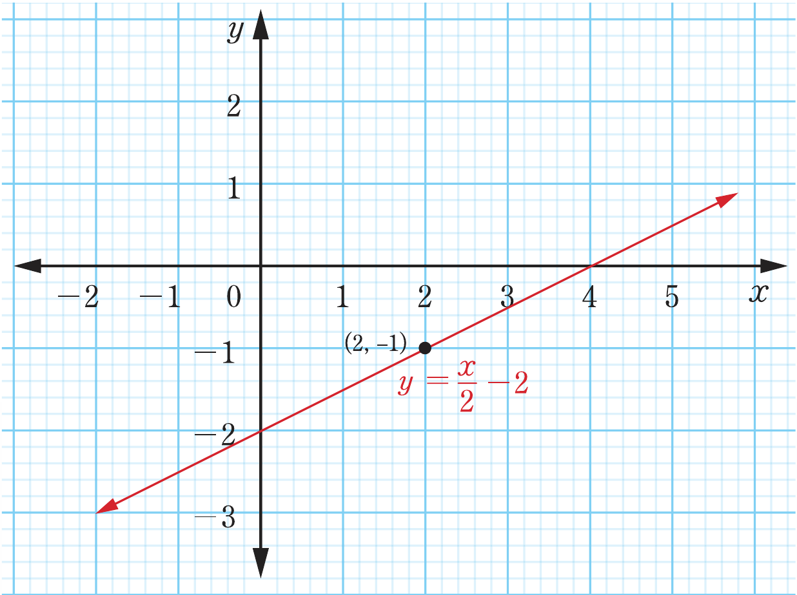
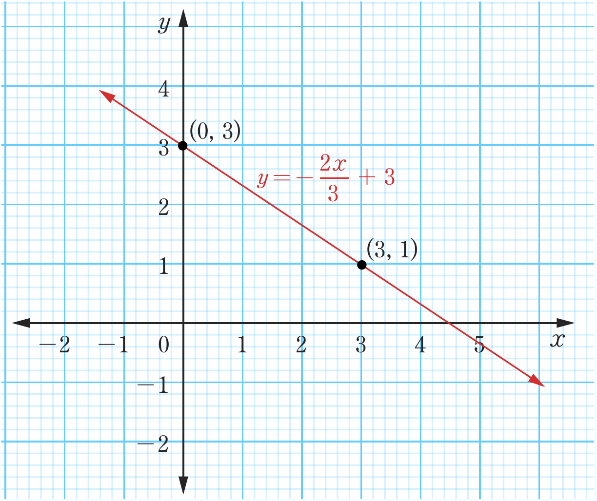

7. (a)

(b)

Two coordinate graphs of linear equations. In (a), the line y = x/2 - 2 rises from left to right and passes through the labeled point (2, -1). In (b), the line y = -2x/3 + 3 slopes downward and passes through the labeled points (0, 3) and (3, 1).yx(2, -1)yx(0, 3)(3, 1)